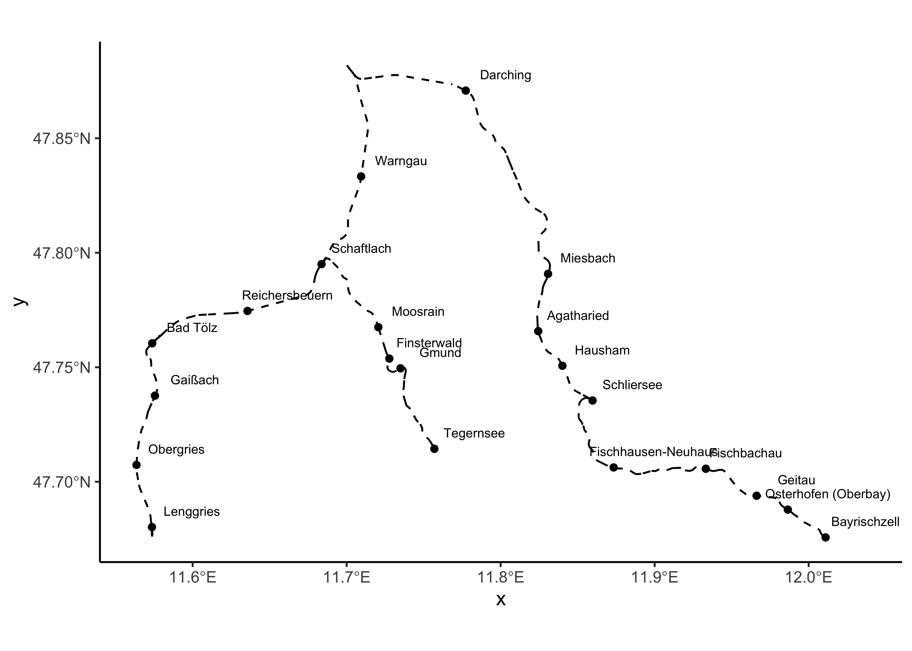
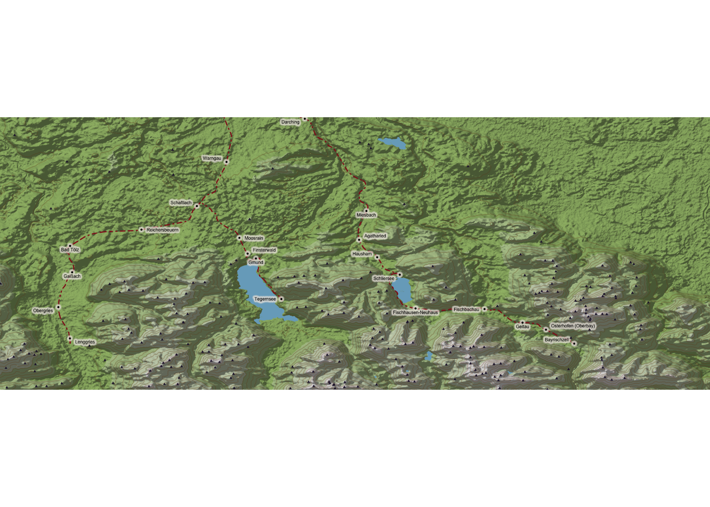
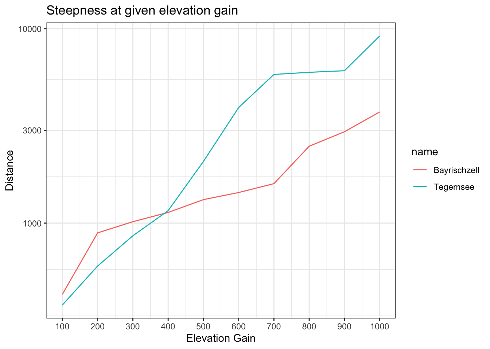

Projects
Open Street Map Data and Elevation
The goal of this project is mainly to practice using OpenStreetMap data and calculate optimal routes on networks such as streets. To get some experience in this area, I want to answer the question from which train station in my area I can ascend 500 meters (or 750/1000m) in elevation with the least distance covered.
First, I load train stations and railway lines from OpenStreetMap in the bounding box of interest which represent train stations in the local mountains which I can reach within roughly an hour.
# To manually get the correct bounding box from a map
# https://norbertrenner.de/osm/bbox.html
brb_bbox= c(11.513,47.615,12.081,47.881)
# Get brb netowrk from osm
brb_netz <- opq(bbox =brb_bbox) %>% add_osm_features(features=list("railway"="rail",
"public_transport"="station")) %>%
osmdata_sf()
brb_stations <- brb_netz$osm_points %>% filter(!is.na(name)&train=="yes")
# Remove stations which are inside the bounding box but don't belong to the routes of interest
# (in the Northeastern quadrant, train towards Rosenheim)
brb_stations <- brb_stations %>% cbind(st_coordinates(brb_stations)) %>% filter(!(X>11.85&Y>47.84)&X<12.04)
# Remove duplicate station points
brb_stations <- brb_stations %>% group_by(name) %>% filter(row_number()==1) %>% ungroup()
# Remove some more duplicates which have a second platform
brb_stations <- brb_stations %>% filter(!grepl(pattern="Gleis",name))The area of interest looks as follows:

Next, I want to load additional data on lakes and peaks from OSM for further plots and calculations:
# Lakes come in both polygon and multipolygons in the osm data (depends on whether the lake is just one surface or has a smaller additional parrt)
lakes <- opq(bbox =brb_bbox) %>% add_osm_feature(key="water",value="lake") %>% osmdata_sf()
lakes_poly <- lakes$osm_polygons %>% filter(!is.na(name))
lakes_multi <- lakes$osm_multipolygons %>% filter(!is.na(name))
#Peaks
peaks <- opq(bbox =brb_bbox) %>% add_osm_feature(key="natural",value="peak") %>% osmdata_sf()
peaks_points <- peaks$osm_points %>% filter(!is.na(name))
peaks_points <- peaks_points %>% cbind(st_coordinates(peaks_points))Next, I want to load elevation data for the bounding box which I am looking at using the package elevatr.
brb_elevation <- get_elev_raster(locations = brb_stations , z=11)
# Saving the coordinate reference system for potential later use
crs_elevation <- crs(brb_elevation)
# Elevatr downloads all necessary terrain tiles to cover the area, so I have to crop the loaded data to the bounding box.
brb_elevation_zoom <- crop(brb_elevation,extent(brb_bbox))
brb_elevation_mat <- raster_to_matrix(brb_elevation_zoom)Next, I want to give a more intuitive visual representation of the area of interest including the elevation profile. To do this, I use the package rayshader. 
Calculating the optimal station
My first approach to find the station from which I can most directly ascend 500 meters is simply to find the distance to the closest point 500 meters higher than the respective station. This includes the following steps:
- Get the elevation data for the train stations; this is not always included in osm data, so I again use elevatr
- For each station:
- Calculate the distance to each point in our elevation matrix
- Calculate a boolean matrix whether each point in the elevation matrix exceeds the station elevation by a certain reference elevation gain (e.g. 750m).
- Element-wise multiplication of the boolean and the distance matrix
- Saving relevant information on the minimum distance point (distance to station, coordinates)
# find minimum distance value in the distannce matrix by subsetting with the boolean matrix, keep coordinates (probably by keeping indices)
###
brb_stations <- get_elev_point(brb_stations,src="aws",z=12)
# Let's look at an elevation gain of 750m
elevation_gain=750
elev_one_row <- function(row,elevation_gain) {
distance <- distanceFromPoints(xy=row,brb_elevation_zoom)
distace_mat <- raster_to_matrix(distance)
reference_altitude <- row$elevation+elevation_gain
bool_elevation_gain <- brb_elevation_mat>=reference_altitude
temp<- bool_elevation_gain*distace_mat
temp[temp == 0]=NA
c(min(temp,na.rm = T),xyFromCell(distance,which.min(temp)))
}
# To apply the mclapply function to each row, I split the data of the stations into a list of rows
brb_stations_list <- split(brb_stations, seq(nrow(brb_stations)))
# Slightly faster in parallel, but won't work on windows (just use standard lapply)
out <- mclapply(brb_stations_list,elev_one_row,elevation_gain=elevation_gain,mc.cores = 4)
out <- t(data.frame(out))
colnames(out) <- c(paste("distance",elevation_gain,sep = "_"),paste("lon",elevation_gain,sep="_"),paste("lat",elevation_gain,sep="_"))
# Combine with the original data
brb_stations <- cbind(brb_stations,out) The optimal station for 750 meters of elevation gain is: Osterhofen where you can ascend 750 m in 2.29 km.
| Station name | Station elevation (m) | Distance to closest point 750 m higher (m) |
|---|---|---|
| Osterhofen (Oberbay) | 805 | 2287.642 |
| Bayrischzell | 806 | 2333.523 |
| Fischbachau | 756 | 2366.798 |
| Geitau | 780 | 2738.108 |
| Fischhausen-Neuhaus | 803 | 3116.556 |
| Lenggries | 680 | 3364.948 |
| Obergries | 667 | 5107.870 |
| Tegernsee | 762 | 5895.583 |
| Schliersee | 785 | 6112.997 |
| Gaißach | 667 | 7149.062 |
| Hausham | 760 | 7877.944 |
| Agatharied | 729 | 9379.123 |
| Gmund | 739 | 9442.909 |
| Finsterwald | 767 | 9533.407 |
| Bad Tölz | 688 | 9569.030 |
| Reichersbeuern | 719 | 9989.030 |
| Moosrain | 759 | 10515.953 |
| Miesbach | 687 | 11749.641 |
| Schaftlach | 760 | 12482.759 |
| Warngau | 716 | 16990.758 |
| Darching | 663 | 18859.716 |
Let’s look at the winner station on a map. The winning point to reach is highlighted in pink.

I would now like to add two extensions to this simplistic solution:
- Expand on the arbitrary nature of a reference altitude by finding the best stations for an interval of altitude gains
- Drop the assumption that I can simply reach any point as the crow flies. Rather, I want to find the closest peak I can reach via hiking trails.
First, let’s look at the first extension:
reference_altitude=seq(100,1000,100)
argument_list <- expand.grid(brb_stations$elevation,reference_altitude) %>% data.frame()
argument_list <- argument_list %>% mutate(reference_altitude=Var1+Var2)
## 1, 2, 3 .. at 100 hm then 1,2,3 ... at 200 hm and so on
distance_matrices_fun <- function(row) {
distance <- distanceFromPoints(xy=row,brb_elevation_zoom)
distace_mat <- raster_to_matrix(distance)
}
distance_matrices <- mclapply(brb_stations_list,distance_matrices_fun,mc.cores = 4)
boolean_matrices_fun <- function(reference_altitude) {
bool_elevation_gain <- brb_elevation_mat>=reference_altitude
}
boolean_matrices <- lapply(argument_list$reference_altitude,boolean_matrices_fun)
distance_matrices <- rep(distance_matrices,10)
mapply_helper <- function(matrix_1,matrix_2){
temp <- matrix_1*matrix_2
temp[temp == 0]=NA
out <- min(temp,na.rm = T)
}
min_distances <- mapply(mapply_helper, distance_matrices,boolean_matrices,SIMPLIFY = T)
# distances_Tegernsee <-min_distances[seq(which( grepl("Tegernsee",brb_stations$name)),210,21)]
# distances_Geitau <-min_distances[seq(which( grepl("Geitau",brb_stations$name)),210,21)]
names <- brb_stations$name %>% rep(10)
data_dist <- tibble(names,min_distances)
data_dist <- data_dist %>% cbind(rep(seq(100,1000,100),each=21))
colnames(data_dist) <- c("name","distance","altitude_gain")
data_dist <- data_dist %>% mutate(steepness=altitude_gain/distance)We can now look at the steepness in the area surrounding the stations:
The highest steepness, i.e. altitude gain per distance, can be reached in Bayrischzell when gaining 700 m in elevation.
| Station name | Altitude gain | Steepness |
|---|---|---|
| Bayrischzell | 700 | 0.4387454 |
| Bayrischzell | 600 | 0.4178294 |
| Osterhofen (Oberbay) | 700 | 0.3850442 |
| Bayrischzell | 500 | 0.3786961 |
| Osterhofen (Oberbay) | 600 | 0.3712598 |
| Osterhofen (Oberbay) | 900 | 0.3652907 |
| Osterhofen (Oberbay) | 500 | 0.3585740 |
| Bayrischzell | 400 | 0.3527236 |
| Tegernsee | 300 | 0.3486320 |
| Tegernsee | 400 | 0.3452312 |
However, as the following plot shows, Bayrischzell is not the most efficient station at all altitude gains. Up to 400 meters, it takes less distance starting at the station Tegernsee: 
The highest average steepness still belongs to Bayrischzell though as this table shows:
| Station name | Average steepness |
|---|---|
| Bayrischzell | 0.3235446 |
| Osterhofen (Oberbay) | 0.3178747 |
| Fischbachau | 0.2596334 |
| Fischhausen-Neuhaus | 0.2480357 |
| Geitau | 0.2421408 |
| Tegernsee | 0.2195867 |
| Schliersee | 0.1527577 |
| Lenggries | 0.1487438 |
| Hausham | 0.1283810 |
| Gaißach | 0.1168208 |
| Obergries | 0.1077978 |
| Gmund | 0.0987223 |
| Agatharied | 0.0950782 |
| Finsterwald | 0.0808724 |
| Bad Tölz | 0.0744942 |
| Reichersbeuern | 0.0727082 |
| Moosrain | 0.0711940 |
| Miesbach | 0.0696425 |
| Schaftlach | 0.0510654 |
| Warngau | 0.0401570 |
| Darching | 0.0359383 |
brb_stations %>% dplyr::select(name,min_dist_peak_name,min_dist_peak,min_dist_peak_elevation_difference) %>% st_drop_geometry() %>% arrange(min_dist_peak) %>% knitr::kable(row.names = F,col.names = c("Station name","Peak name","Distance","Elevation distance"))| Station name | Peak name | Distance | Elevation distance |
|---|---|---|---|
| Bayrischzell | Wendelstein | 5756.869 | 1032 |
| Osterhofen (Oberbay) | Wendelstein | 6057.653 | 1033 |
| Fischbachau | Aiplspitz | 6661.403 | 1003 |
| Geitau | Wendelstein | 6837.118 | 1058 |
| Fischhausen-Neuhaus | Lempersberg | 9348.468 | 1014 |
| Lenggries | Roßstein | 11744.779 | 1018 |
| Schliersee | Lempersberg | 13426.962 | 1032 |
| Tegernsee | Blankenstein | 13616.252 | 1006 |
| Obergries | Roßstein | 14945.497 | 1031 |
| Agatharied | Jägerkamp | 15303.359 | 1017 |
| Hausham | Lempersberg | 15810.777 | 1057 |
| Miesbach | Jägerkamp | 18279.452 | 1059 |
| Gaißach | Roßstein | 18782.963 | 1031 |
| Gmund | Blankenstein | 18877.650 | 1029 |
| Finsterwald | Blankenstein | 19573.087 | 1001 |
| Moosrain | Blankenstein | 21393.072 | 1009 |
| Bad Tölz | Roßstein | 21567.387 | 1010 |
| Reichersbeuern | Wallberg | 24053.739 | 1003 |
| Warngau | Wallberg | 25941.121 | 1006 |
| Schaftlach | Blankenstein | 26513.270 | 1008 |
| Darching | Brecherspitz | 27503.781 | 1022 |
```